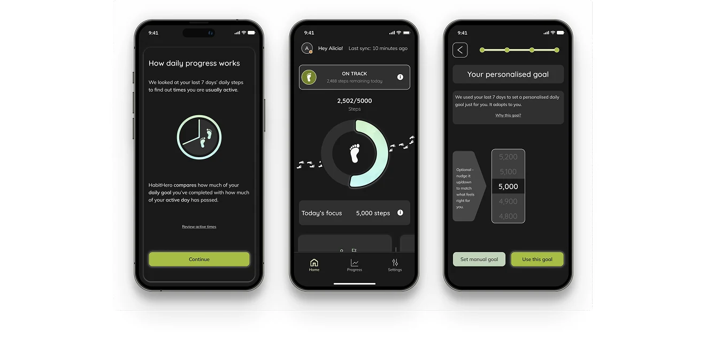
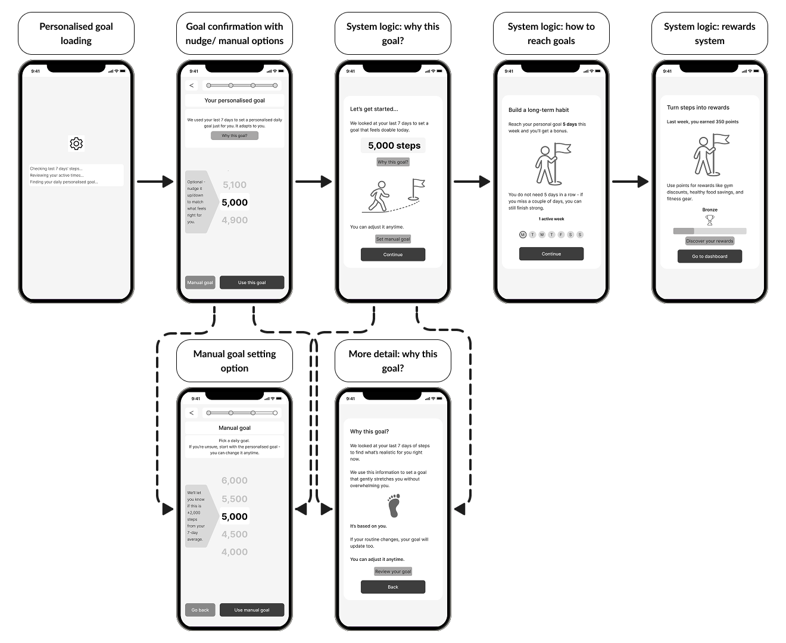
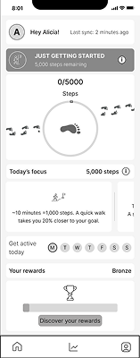
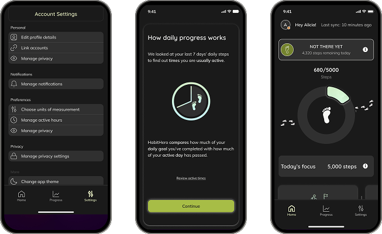
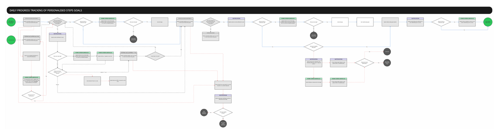
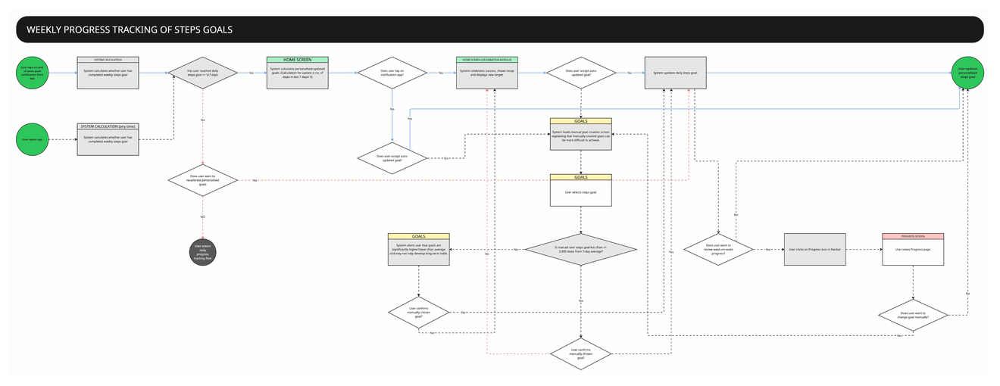
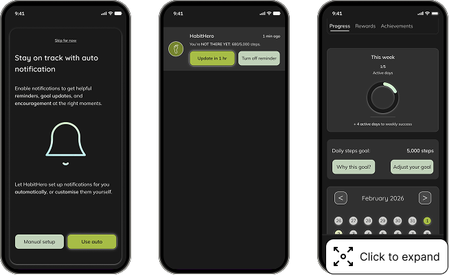
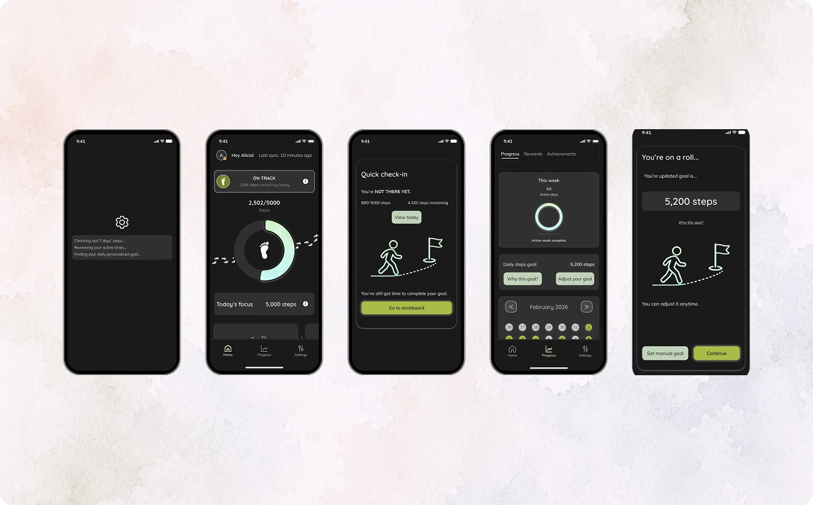

HabitHero: redesigning fitness progress tracking for real-life routines

HabitHero is a rewards-based fitness app built around personalised activity goals.
I planned and conducted the research, synthesised the findings, redesigned the information architecture and progress experience, produced the prototype and ran usability testing with seven participants.
I redesigned the progress experience - from onboarding and goal setting to daily guidance, weekly review and recalibration - to help time-poor users understand what to do next and recover more easily when routines change.
The challenge
The existing experience didn’t support successful habit-formation: the app made users work too hard interpreting progress. Users disengaged before habits formed. For PrimeCare, this led to weak retention and lower monthly active users. Discovery research found that time-poor users were managing too many metrics, were unsure when they had done enough, and could experience missed goals as pressure rather than useful feedback.

Issue #1: Goal choice without guidance or context
Users select an outcome before seeing how it becomes a realistic personal target.
Issue #2: Progress complexity
Users must compare several metrics to decide whether they are on track.
Issue #3: Activity data lacks purpose
Progress is recorded but doesn’t clarify completion or the next action.
The opportunity was to make early tracking feel clear, meaningful, and supportive - so more people returned and stuck to their goals building successful habits and lifetime value.
User research → design priorities
I interviewed 7 people about how they used fitness apps. The findings focused the redesign on reducing decision burden, making completion motivating and supporting users when routines were disrupted.
Goal setting creates decision pressure
“It needs to be realistic because... we’re human beings, we’re not machines.”
Eleni, 34
Design priority
Recommend a realistic starting goal, explain how it was created and let users adjust it.
Progress needs a clear sense of “done”
“You need to know immediately: I have done it now - and then you can relax.”
Gareth, 43
Design priority
Show a clear daily status, a completion moment and one useful next action.
Motivation is fragile when routines change
“It’s another thing to get stressed about.”
Ashley, 36
Design priority
Let users adjust, pause or recalibrate their goals and easily return after disruption.
Designing a clearer progress loop

Design decision #1: Build confidence before commitment
Goal setting needed to balance guidance with user control. I explored three different ways of helping users establish a realistic target.
Balancing automation with user freedom
In mid-fidelity, I chose to proceed with a balance of user control and smart recommendations. The app delivers a personalised recommended goal that users could understand, accept and adjust (while retaining optional manual goal as an option). Balancing frictionless onboarding with meaningful goal setting, I developed an onboarding flow with progressive disclosure and user freedom as central features.

The aim was to reduce the effort required during setup while creating a context where users felt agency and ownership of their personal fitness goals: a crucial step in successful habit formation.
Design decision #2: Make progress immediately understandable
Increasing cognitive load during fragile moments of habit formation led to reduced satisfaction and efficiency. The Home screen needed to update users in seconds and guide them to their next step forward.

I explored a wide range of home-screen structures before selecting a direction. By varying the order, scale and grouping of status, progress, streaks and rewards, I could evaluate which hierarchy - of status, progress, streaks and rewards - made daily progress easiest to understand and act on.
Prioritising status and guidance
The selected design, therefore:
- made the user’s current position immediately visible;
- included tooltips for users who needed greater explanation of their progress status;
- kept metrics, weekly progress and rewards secondary - but accessible;
- created space for contextual guidance on the user’s next step.
{kind=link}

Users also needed the system logic to be visible and adjustable.
Testing showed that visual hierarchy alone did not make progress fully understandable as users were able to view their status but didn’t understand it.
I, therefore, added:
- clearer explanation of the day model
- controls for how progress and notifications
- an added splash screen during setup.
{kind=link}

Design decision #3: Design for recovery, not perfection
Research showed that motivation could weaken quickly when goals were missed. Using user flows to empathise with all user states, I explored how prompts, completion states and weekly feedback could recognise partial progress, provide manageable next actions and make restarting feel normal.

App response depends on the user’s current state
The system converts step count and time-of-day into a clear daily status (calculating status by % of steps taken vs. % of active hours remaining) helping goals feel achievable and meaningful.
Notifications re-engage users with daily progress updates
The cycle can begin when the user opens the app or when the system evaluates progress and sends a notification helping users who are off track to act early to complete their daily goals.
Multiple routes support recovery
The system does not depend on a single successful response. Users can act now, delay, return later, review progress or change the goal, creating multiple routes back into the experience and towards success.

Weekly progress triggers personalised goal recalibration
A new goal is suggested after weekly review based on last 7-days’ steps. The aim is to maintain challenge while avoiding goals that feel too easy or discouraging, supporting retention by keeping goals realistic and motivating.
Automatic updates remain transparent
The user sees the proposed goal and the reasoning behind it before deciding whether to accept the change. Moreover, users retain the ability to manually create a goal rather than being forced to accept an automated recommendation.
Weekly closure reinforces progress
Weekly closure helps users make sense of their effort, explains the outcome and creates a clear transition into the following week.
Testing validated the recovery concept
Testing validated the recovery concept also showed that recovery needed more user control and clearer closure. 4/7 participants wanted greater control over notification behaviour, while 6/7 struggled to understand the weekly success rule.
This led me to:
- refine UX copy
- build out the notification system to enable greater flexibility
- simplify historical progress view.
{kind=link}

Final experience
The final prototype connected goal setup, daily status, recovery prompts, weekly review and recalibration into one progress loop. Each screen was designed to reduce interpretation, explain system decisions and give users a clear next step.

The project helped me move from designing individual screens to designing a habit formation system. The most important shift was recognising that fitness tracking is not only about showing progress; it is also about how the product responds when progress is uneven. The strongest parts of the final design came from treating missed goals, changing routines and user control as central product problems rather than edge cases.
Next steps?
Before development, the adaptive-goal logic would need validation with product and health specialists. Notification timing, frequency and tone would also require testing to ensure that prompts remain useful rather than intrusive or demotivating.
The next phase would be a beta study examining whether users:
- return to the app after missing several days;
- continue to view adaptive goals as supportive;
- understand their long-term progress.